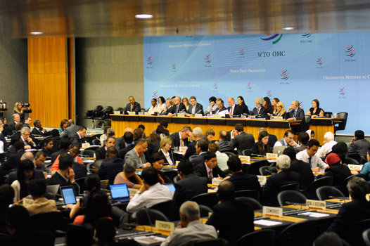
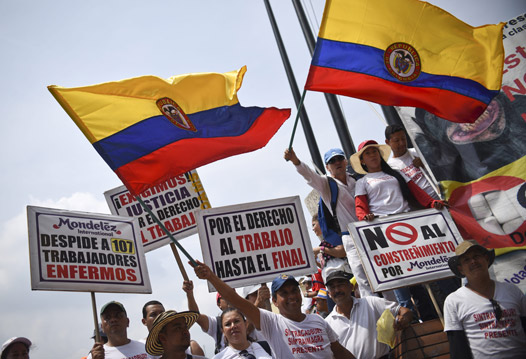
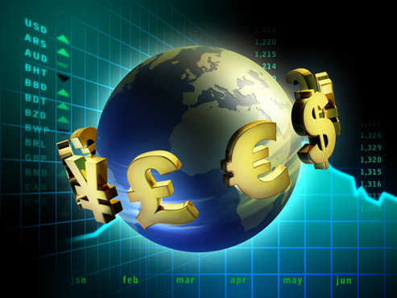
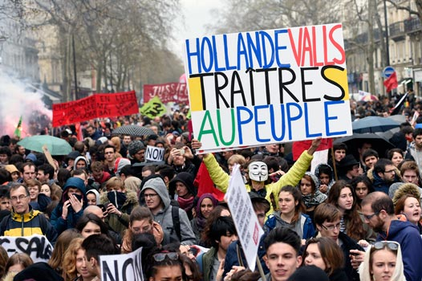

El mundo actual surge del fin de la Guerra Fría (1945-1991), hecho que propició la expansión del capitalismo por todo el planeta. El resultado fue el nacimiento de un gran mercado mundial en el que se intercambian mercancías, capitales e información de todo tipo. Identificar los distintos actores de la llamada aldea global, permite comprender el mundo en el que vivimos.
-
01
La globalización
Open or CloseEste fenómeno se denomina, desde la década de los 90, globalización, y representa la interdependencia mundial a nivel económico, político, social y cultural. Esto, sin embargo, no es algo tan reciente como pudiéramos creer. Se remonta al siglo XVII, cuando surgieron las primeras grandes empresas como la Compañía de las Indias Orientales. Más tarde, la Revolución Industrial y la extensión del sistema capitalista llevaron a la internacionalización de la economía.
La bolsa de valores es donde se intercambian títulos o valores comerciales relacionados con la actividad económica de un lugar. El proceso de globalización actual provoca que lo que suceda en la Bolsa de Nueva York pueda afectar a las economías del resto del mundo de manera inmediata. Bolsa de Hong Kong (China).
La interdependencia ha sido posible por la revolución en los transportes y las comunicaciones, lo que ha generado una conciencia y cultura globales construidas sobre los valores del capitalismo e impuestas por las culturas dominantes al resto de la humanidad.
01.1La mundialización de la economía
A nivel económico, el mundo puede dividirse entre el centro y la periferia. El centro agrupa a los países desarrollados o del primer mundo, los cuales se definen por ser ricos e industrializados. Estados Unidos, la Unión Europea y Japón actúan como el centro de la economía global. Por su lado, en la periferia se encuentran los países en desarrollo o del tercer mundo, que se caracterizan por su carácter agrario, pobre y dependiente.
Recuerda
La globalización económica ha ido acompañada de una liberalización del sistema financiero, lo que ha permitido aumentar el volumen de transacciones financieras necesarias para incrementar los movimientos económicos.
A nivel económico, la globalización ha generado mayores desequilibrios entre el centro y la periferia debido a:
- La concentración de capitales en grandes empresas.
- La libre competencia en mercados cada vez más liberalizados.
- El capitalismo especulativo.
- La deslocalización de la producción.
Todo ello ha provocado una imposición de precios por parte de las economías más poderosas, un reparto más injusto de la riqueza y una competencia desigual entre sus productos y los de los países de la periferia.
Profundiza
La movilidad de los capitales, característica de la globalización económica, propicia la precariedad laboral. Gracias a la libertad de expresión, las manifestaciones suelen ser habituales en los países desarrollados para protestar, por ejemplo, sobre consecuencias de la globalización.
En el mundo globalizado existen diversas instituciones y organizaciones político-económicas que regulan la economía a nivel mundial. Entre las más importantes se encuentran el Fondo Monetario Internacional (FMI), el Banco Mundial, la Organización para la Cooperación y el Desarrollo Económico (OCDE) y la Organización Mundial de Comercio (OMC). Estas organizaciones están dominadas por los países industrializados.
Además, también debemos tener en cuenta la existencia de organizaciones informales, como el grupo de los Ocho (G8) y el grupo de los Veinte (G20), las cuales agrupan a los países más ricos e industrializados del mundo. Estos se reúnen de forma periódica para impulsar distintas medidas de carácter económico de alcance mundial.
01.2Los agentes de la globalización
El proceso de globalización ha dependido de unos agentes concretos. Estos son los organismos internacionales, los gobiernos y las multinacionales, los cuales controlan las pautas que definen a nivel internacional las finanzas, la industria y el comercio.
Las grandes multinacionales son, junto con organismos internacionales y gobiernos, los agentes responsables de la globalización. Cada año se celebran en los países ferias donde las empresas de todo el mundo presentan sus productos. La ciudad estadounidense de Las Vegas acoge cada año el Consumer Electronic Show (CES), una de las mayores ferias de electrónica del mundo.
01.3Los motores de la globalización
Junto con los agentes propios de la globalización, también debemos tener en cuenta que existen unos motores que la impulsan. Estos son Estados Unidos, la Unión Europea (UE) y Japón, las tres regiones que organizan el sistema económico mundial. También se puede incluir a los denominados NPI (Nuevos países industrializados) como motores de la globalización. Se trata de países recientemente industrializados, como México, la República de Sudáfrica, Turquía, Brasil y Rusia.
Los llamados motores de la globalización controlan:
- El comercio y el sistema financiero.
- El conocimiento científico y el desarrollo tecnológico.
- Los transportes y las comunicaciones.
- La riqueza mundial.
El edificio de la Bolsa de Nueva York (Estados Unidos), en la conocida Wall Street, es uno de los mayores símbolos del capitalismo. La crisis del sistema financiero estadounidense en 2008 se propagó al resto de la economía del mundo y sus efectos se sintieron de forma intensa en los países del sur de Europa. Sin embargo, esto no fue algo nuevo; el crac de 1929 ya había desencadenado una profunda crisis mundial.
La centralidad de la empresa multinacional
La visión de las empresas multinacionales como un club cerrado formado por Estados Unidos, Japón y los países de Europa occidental ha dado paso a una estructura más flexible. Las principales empresas multinacionales por facturación, número de empleados, inversión en I+D (inversión y desarrollo), etc., siguen perteneciendo a esos países, pero progresivamente empiezan a asentarse en el mercado empresas de algunos países del tercer mundo. Estados Unidos, Japón, Alemania y Francia concentran más del 75 % de las 100 mayores empresas del mundo.
Profundiza
01.4Las potencias emergentes
Aunque países como Estados Unidos, los de la Unión Europea y Japón son los principales motores de la economía global, les siguen muy de cerca varias potencias emergentes, entre las que destacan Brasil, Rusia, India y China. Este grupo se conoce como BRIC.
China es una de las mayores potencias económicas mundiales. Pese a ser un Estado comunista, desde la década de los 80 ha desarrollado un modelo económico que ha hecho de este gigante asiático la mayor fábrica del mundo. El país tiene una extensión territorial de 9 597 107 km2, además de 1 314 480 000 habitantes y un crecimiento anual del PIB muy elevado, que en el último lustro ha oscilado entre el 8 y el 10 %.
Los países que forman parte del grupo de los BRIC comparten tres rasgos característicos:
- Elevado número de habitantes.
- Gran extensión territorial.
- Destacado crecimiento anual del PIB.
Junto con los países del BRIC, existen otros que se pueden definir como potencias regionales, como es el caso de México, la República de Sudáfrica (algunos expertos la incluyen en el grupo de los BRIC), Turquía, Indonesia y la República de Corea.
01.5Consolidación
Actividades para consolidar lo que has aprendido en esta sección.
-
02
Claves para comprender la globalización económica
Open or CloseDurante el periodo anterior a la implementación de la economía global, cada país, con base en sus empresas nacionales y con una infraestructura económica ubicada dentro de los límites de su territorio, debía explotar sus recursos, producir los bienes y servicios necesarios, distribuirlos y ofrecerlos principalmente en sus propios mercados.
Bajo dicho modelo económico las exportaciones representaban un lugar menor dentro de las actividades económicas. Por el contrario, las fuerzas de la economía se enfocaban en desarrollar el mercado interno mediante la implementación de un modelo proteccionista.
En el transcurso de la década de los 80 del siglo XX, los Estados nacionales empezaron a perder fuerza ante el avance del poder económico de los países más fuertes económicamente y de sus empresas, las cuales se expandieron con rapidez. En consecuencia, los Estados cada vez tuvieron menor control sobre lo que ocurría con la producción de sus países, porque las principales decisiones económicas se empezaron a tomar en las juntas directivas de las grandes corporaciones.
Como resultado, las economías del mundo se empezaron a mundializar y a organizar según un modelo único determinado por las principales fuerzas económicas globales, encabezadas por las corporaciones transnacionales, empresas que han acumulado la fuerza para extenderse, alcanzando una dimensión mundial.
Las corporaciones globales han ganado un poder y una influencia sin precedentes. Representan el triunfo de los más fuertes y los mejor preparados para sobrevivir en la competencia económica. En la nueva economía o economía globalizada adquieren gran preponderancia el conocimiento y la innovación dentro del proceso productivo.
Otras fuerzas importantes para el despliegue de la globalización son los trabajadores globales, el conocimiento científico, las tecnologías digitales de la información y de la comunicación, las instituciones económicas globales, las instituciones financieras, las infraestructuras portuarias y de transporte, así como las alianzas y los tratados comerciales entre bloques económicos.
Uno de los lemas de las economías globalizadas es "exportar o morir". Mediante el posicionamiento en el mercado global las empresas buscan fabricar productos y venderlos en el exterior mediante el desarrollo de marcas mundialmente acreditadas.
02.1La globalización de la información
La globalización de la información ha sido posible por el desarrollo de las tecnologías de la comunicación, que han permitido el intercambio de datos, textos, sonidos, imágenes y videos a través de internet y la telefonía móvil. Todos estos avances tecnológicos garantizan una información inmediata. Asimismo, esta revolución tecnológica ha propiciado la aparición de un nuevo tipo de empresas, que conforman la denominada nueva economía.
Internet ha representado una de las grandes revoluciones de las telecomunicaciones desde finales del siglo XX. La generalización del acceso a la red en el mundo desarrollado ha transformado las comunicaciones, lo que ha influido en la economía, en las relaciones sociales y en la cultura.
De forma paralela, este desarrollo tecnológico sin precedentes ha influido también en las relaciones humanas, sobre todo por la existencia de las redes sociales virtuales con las cuales es fácil y rápido contactar y conocer gente de todas partes del mundo.
02.2La interconexión económica global
Imagina cualquiera de los productos que habitualmente observas en los anuncios publicitarios o en las vitrinas de los centros comerciales. Es muy probable que para su elaboración se hayan empleado los recursos naturales y el trabajo de personas ubicadas en diferentes lugares del planeta: la naturaleza, los trabajadores, los empresarios, los administradores, los comerciantes y los banqueros. Todos participan de distintas formas en la organización de la economía global.
De esta manera se creó una red de producción y de comercio mundial, en la que cada una de las decisiones tomadas por los gobiernos, las empresas, los bancos, los trabajadores y los consumidores de las diferentes naciones del mundo se interconectan, lo que provoca reacciones en el resto de la economía global.
Un interés común impulsa a los diferentes actores económicos globales: producir para exportar. Ello explica que la globalización se distinga por una serie de movimientos y de flujos económicos que circulan a nivel planetario. Así, cada vez existe mayor interrelación e interdependencia entre las economías de unos y otros países y regiones. Los automóviles, los computadores, las prendas de marca, las comidas de cadena, los videojuegos, son ejemplos de productos globales que en su elaboración combinan insumos, tecnologías, capital y conocimientos procedentes de diferentes países.
Las redes se han convertido en elementos claves para el intercambio de bienes e información, la economía en red transforma la economía tradicional, basada principalmente en la fabricación y la industria, hacia una economía fundamentada en el conocimiento y la innovación gracias a los avances tecnológicos.
La economía global también se conecta mediante los movimientos de dinero, en forma de flujos de inversiones, a través de las bolsas de valores del planeta, en las cuales participan las empresas de mayor rentabilidad.
Gracias al soporte que ofrecen las tecnologías digitales de la comunicación, la economía global se retroalimenta a cada segundo a través de la circulación planetaria de millones de transacciones, información económica, ofertas, compras y mensajes publicitarios, los que, en conjunto, dan forma al intercambio económico mundial.
Dicho proceso de interrelación intensiva entre empresas, inversiones, trabajadores, mercados, consumidores y culturas, convierte a cada persona del mundo en una parte de la economía conectada en red.
Así mismo, las empresas que controlan la economía global tienden a estandarizar y a homogeneizar los productos que ofrecen, de tal manera que, en la mayor parte de los países globalizados se consumen las mismas marcas, se ven los mismos anuncios publicitarios y, en general, se impone un estilo de vida común.
El desarrollo extraordinario de los medios tecnológicos para almacenar y distribuir información los ha convertido en un factor determinante para que las grandes corporaciones controlen la economía global.
Recuerda
La interconexión e interdependencia entre economías puede favorecer el crecimiento mutuo de los países, pero también, la caída de una de las partes desestabiliza a la otra. La interrelación hace que ante una falla o una crisis, el resto de las economías se ven afectadas, tal como ocurrió con la crisis del 2008, que se inició en Estados Unidos y que luego se extendió hacia los demás países del mundo.
La OMC es una organización global cuyo objetivo es fomentar el comercio entre los países mediante la negociación de acuerdos y la aplicación de normas comerciales. A este organismo los gobiernos miembros acuden para resolver los problemas comerciales que tienen unos con otros. La OMC nació como consecuencia de negociaciones, y todas sus actividades están mediadas por negociaciones.
Profundiza
02.3La aceleración del tiempo
Con la globalización de las economías, las personas que participan de dicho proceso empezaron a vivir una experiencia diferente del espacio y del tiempo, comparada con la manera como tales dimensiones se viven en las sociedades industriales y en las sociedades rurales.
En el caso de las sociedades rurales, se vive de acuerdo con la interacción con la naturaleza y el tiempo transcurre de forma cíclica. La vivencia del tiempo es apacible y está marcada por la alternancia de los periodos de lluvia y de sequía, que indican los momentos adecuados para sembrar y para cosechar.
La forma del tiempo en las sociedades industriales está marcada por el ritmo que impone la producción en serie, es el tiempo del reloj, el que marca el comienzo y el final de la jornada de las personas que viven la repetición de rutinas de acuerdo con los horarios y las agendas.
Por su parte, en las sociedades globalizadas, gracias a las tecnologías digitales de comunicación e información, las personas viven a otro ritmo caracterizado por la aceleración del tiempo y el encogimiento del espacio, fenómenos que caracterizan los procesos que ocurren en la aldea global.
La globalización no elimina las otras formas de vivir en el espacio y el tiempo, sino que las tres coexisten y se superponen. Ejemplo de ello son las transacciones económicas que viajan por las redes a la velocidad de la luz, o la disponibilidad de las personas para el trabajo sin importar si es de día o de noche. Se vive un tiempo indiferenciado, en donde todo es posible a cualquier hora.
La interconexión de millones de personas mediante la red mundial de computadoras que funcionan a altas velocidades, altera el sentido del tiempo. Así, las personas tienen la percepción de que los eventos ocurren de forma inmediata. Existe una simultaneidad compartida por todas las personas conectadas en la red, la cual es reforzada por la influencia de medios masivos de comunicación.
En el tiempo global todo sucede con demasiada prisa, lo que ocasiona que se desdibuje el pasado y el futuro, que son reemplazados por los límites temporales del presente. Las personas que viven sumergidas en el tiempo global desarrollan la tendencia a no proyectarse a largo plazo y también tienden a borrar sus lazos con el pasado y con las tradiciones de su territorio. Viven inmersas en un instante eterno.
Recuerda
La alteración del tiempo con la globalización explica que se hayan puesto en uso una serie de conceptos como instantaneidad, inmediatez, efímero, corto plazo, cambio permanente, innovación y volatilidad, para explicar muchos de los fenómenos económicos globales.
02.4El encogimiento del espacio
La interconexión global también ha relativizado las distancias. La articulación mundial entre los productores y consumidores hace que las personas experimenten la sensación de que cualquier lugar del planeta está al alcance de su mano, lo que altera su noción de espacio y de territorio.
El creciente desarrollo de actividades a través de las redes globales produce en las personas la sensación de que no existen límites geográficos. Al navegar en la red los internautas atraviesan las fronteras de los países y viven en un territorio donde las distancias no dependen de la realidad física que separa un punto de otro. Lo que antes se percibía como lejano, ahora se torna próximo y accesible.
Las nuevas tecnologías de comercio a través de internet permiten que una persona pueda obtener productos desde cualquier punto del planeta y a un click de distancia. Al crear una tienda virtual nunca se cierran las puertas. Asimismo se puede comprar en una moneda uniforme, transferir y recibir dinero en segundos desde y hacia cualquier parte del mundo y proveer servicios a miles de kilómetros de distancia.
Ya no es necesario un mercado físico para las transacciones comerciales. Internet permite que las nuevas empresas aumenten su visibilidad y alcancen una población de clientes potenciales nunca antes vista. También la mejora en los medios de transporte ha favorecido la movilidad global de modo masivo: trenes de alta velocidad, barcos cargueros, puertos marítimos y aéreos, superautopistas y autopistas marítimas.
Tales mejoras hacen posible la circulación global de mercancías a través de los circuitos comerciales, que permiten el transporte eficiente de materias primas y de mercancías, desde y hacia cualquier punto del mundo.
Otro aspecto de la alteración del espacio en la globalización es la virtualidad. El espacio virtual se presenta como un lugar no físico donde se pueden desarrollar todo tipo de actividades económicas, como trabajar, comprar, vender y anunciar.
Basta con un portal de internet, para que los actores económicos se encuentren sin necesidad de un contacto cara a cara en un lugar físico. Incluso no es necesaria la mediación de billetes, sino que las transacciones se realizan mediante el uso de medios electrónicos.
Recuerda
Tampoco se puede perder de vista que muchas veces al hablar de la globalización se olvida la dimensión local. Sin embargo, lo global no puede existir sin lo local. Al olvidar lo local, se corre el riesgo de perder la conexión con la cultura, con la naturaleza y con las tradiciones. Ello significa que, si bien, la globalización económica pone a disposición de las personas una multitud de productos para su elección, por su parte, la dimensión local les aporta a los individuos un sentido de pertenencia a su comunidad y una conexión con la vida cotidiana de las personas que viven a su lado. Por ello se afirma que se debe pensar globalmente y actuar localmente.
02.5Consolidación
Actividades para consolidar lo que has aprendido en esta sección.
-
03
La organización de la economía global
Open or CloseEl sector productivo está conformado por el conjunto de empresas que elaboran los productos y que prestan los servicios necesarios para sostener económicamente las necesidades de la población. Desde finales del siglo XX, las corporaciones transnacionales se han convertido en las principales protagonistas de la producción mundial.
Las empresas transnacionales
Las transnacionales son empresas privadas que se registran en un país y al mismo tiempo establecen sucursales o filiales en otros países, expandiendo su influencia económica a nivel mundial. Operan en el planeta para obtener materias primas, contratan trabajadores en diferentes países, mueven su dinero a través de las bolsas de valores de todo el mundo y sus mercancías circulan por los puertos atravesando las fronteras de los países. También consideran a la población mundial como sus clientes potenciales.
Las actividades de las empresas transnacionales funcionan como un solo sistema integrado. Para ello, conectan el trabajo que se desarrolla en granjas, minas, fábricas, oficinas, talleres, carreteras, barcos, puertos aéreos y marítimos, bodegas, almacenes y centros comerciales de las principales ciudades del mundo.
03.1Las empresas en la economía global
La administración de las multinacionales se imparte desde el país de origen y su objetivo es controlar mercados cada vez de mayor tamaño y obtener más ganancias. También captan recursos mediante la negociación de acciones en las bolsas de valores del mundo.
Asimismo, destinan importantes recursos para la investigación científica y el desarrollo de tecnologías de vanguardia aplicadas en la producción, la distribución, el mercadeo, la publicidad y las ventas. Generalmente elaboran productos y servicios estandarizados, lo cual les facilita ingresar a los mercados mundiales con precios competitivos.
Muchas veces las transnacionales llegan a adquirir grandes dimensiones y acumulan mucho poder económico. Ello les facilita influir en los gobiernos para obtener ventajas y aumentar sus beneficios.
El enorme poder económico de las empresas transnacionales ha sido diagnosticado por el Programa de las Naciones Unidas para el Desarrollo (PNUD), que afirmó que las ventas totales de estas empresas superan el Producto Interno (PIB) de muchos países, es decir, que las ventas anuales de las transnacionales son mayores que los presupuestos con que disponen cada año muchas naciones del mundo.
Hoy, gran parte de la producción global está controlada por las transnacionales. Muchas de las noticias económicas globales son protagonizadas por las fusiones y disputas de grandes corporaciones transnacionales, que se enfrentan entre sí en una competencia planetaria por el control de recursos, mercados y redes comerciales.
Recuerda
Una de las principales estrategias que los países implementan para estimular la globalización de sus economías es la construcción de las denominadas zonas francas. Son áreas del territorio de un país donde las empresas obtienen beneficios especiales, como menores impuestos, menores salarios y facilidades para exportar e importar. Un caso ejemplar de zona franca son las maquiladoras.
03.2El trabajo global
La globalización económica introdujo cambios importantes en la forma de trabajar, como el trabajo inmaterial, que exige mayor formación, capacidad y desarrollo intelectual. Se pide al trabajador que tome decisiones, que tenga iniciativa, que se adapte a los cambios y se anticipe a los problemas. Sin embargo, hay que tener en cuenta que las empresas transnacionales emplean solo un 3 % de la fuerza de trabajo mundial.
El modo de producir en la economía global se basa en una forma de trabajo denominada trabajo inmaterial. Dicha forma de trabajo se caracteriza porque exige del trabajador sus destrezas intelectuales, más que las manuales. El trabajo que se realiza en el sector de los servicios, principalmente la tecnología, la ciencia, los medios de comunicación, las finanzas, la educación y la salud, son ejemplos de trabajo inmaterial. Por ejemplo, en el caso de un trabajador que fabrique programas informáticos o de software, el valor está en el conocimiento que involucra su fabricación y no en el costo de los materiales físicos del disco en el que está grabado el producto.
En la empresa global los trabajadores deben ser capaces de aprender nuevos conocimientos constantemente y, además, rotar desempeñando diversas labores. En consecuencia, no basta con estudiar una carrera profesional, sino que a lo largo de la vida laboral se debe seguir cualificándose en los nuevos modos de producir, y estar al día en el manejo de las nuevas tecnologías.
Por otra parte, en muchos casos, los trabajadores han perdido las garantías laborales que habían conquistado. Hoy se observan nuevas formas de explotación intensiva del trabajo, como las jornadas sin límite, el trabajo temporal, la prohibición de huelgas, el desmonte de las organizaciones sindicales, la eliminación de los derechos vacacionales y de las subvenciones al desempleo.
También se impuso un modelo caracterizado por la intermitencia laboral, es decir que no se consigue un empleo para toda la vida, sino que se pasan periodos de desempleo y se cambia varias veces de empresa.
La globalización ha generalizado un empobrecimiento en la calidad de los empleos que se ofrecen. En consecuencia, hoy se presenta una precarización de la condición de trabajador. La Organización Internacional del Trabajo, OIT, indicó que en las últimas dos décadas los salarios en todas partes del mundo disminuyen su poder adquisitivo y cada vez a mayor velocidad.
Las compañías transnacionales se ubican en aquellos países en donde los salarios de los trabajadores son bajos, lo que hace que unos países reduzcan los salarios para atraer la inversión. A dicho fenómeno se le conoce como deslocalización empresarial, lo que genera desempleo en los países de origen, y subempleo, en los países de destino.
Otra crítica de los trabajadores al modelo de globalización actual radica en que les niega el derecho a traspasar las fronteras con las mismas facilidades que se otorgan a las mercancías, a los capitales y a los inversionistas.
03.3Los bloques económicos
La libertad para comprar y para vender productos y servicios es una de las principales reglas de juego para la economía globalizada. Cuando un país se inserta en la economía global debe flexibilizar su normatividad comercial para permitir el libre flujo de exportaciones e importaciones a través de sus fronteras.
Cuando se presenta una situación en la que muchos países se abren para practicar el libre comercio, se crea un escenario ideal para la formación de alianzas y pactos entre las economías de las naciones con el objetivo de obtener beneficios mutuos. Estas alianzas han dado lugar a la creación de bloques económicos, cuyos miembros diseñan una estrategia común para afrontar de manera compartida los retos que les plantea la economía globalizada.
Como resultado de la integración económica, la economía mundial tiende a formar hoy un archipiélago de bloques económicos que se protegen entre sí y que pugnan con otros por el dominio económico. Algunos ejemplos de bloques económicos globales son la Unión Europea, la Comunidad Económica Eurasiática, la Asociación de Naciones del Sudeste Asiático y la Unión Africana.
El camino más común para que un grupo de países formen un bloque económico es mediante la negociación entre Estados y la posterior firma de acuerdos y de tratados de libre comercio. Son pactos económicos mutuos, los cuales ofrecen confianza y garantías para que sus miembros formen lazos a largo plazo entre sus economías.
Los países que forman parte de un bloque económico acuerdan reglas comunes para la libre circulación a través de sus fronteras de materias primas, productos, trabajadores y dinero. Así se busca la integración económica, de forma que todos los participantes del bloque se fortalezcan y logren un mayor impulso hacia su desarrollo.
Para el caso de Latinoamérica, los bloques más representativos son la Alianza Bolivariana para los Pueblos de Nuestra América (Alba), la Unión de Naciones Suramericanas (Unasur), el Mercado Común del Sur (Mercosur), la Comunidad Andina (CAN) y la Alianza del Pacífico.
Algunas estrategias para la integración de un bloque económico consisten en crear zonas de libre comercio, eliminar aranceles, pactar preferencias comerciales, organizar la unión aduanera, el mercado común y el uso de una moneda única.
Así como los miembros de un bloque económico abren sus fronteras para el comercio con sus aliados, también se protegen mutuamente de la competencia proveniente de otros bloques. Para ello establecen barreras, como las restricciones a las importaciones, las licencias, las cuotas, y exigencias sanitarias, sociales y ecológicas. Ello implica la intervención de los Estados para proteger a las empresas del bloque del cual forman parte.
Los socios de un bloque económico no siempre participan de la alianza en igualdad de condiciones. Muchos casos evidencian que los tratados favorecen más a una de las partes interesadas. Las asimetrías se deben a que el poder de negociación de algunos agentes económicos, en particular las empresas transnacionales, la banca mundial y los gobiernos donde dichas empresas tienen su sede, inclinan a su favor los acuerdos y ajustan las reglas a su conveniencia.
La creación de una moneda única para dos o más naciones es el resultado de un proceso de integración económica que favorece el intercambio comercial intensivo entre los mercados involucrados. Asimismo, exige que sus economías compartan características comunes en cuanto a su política fiscal, deuda pública, tasa de inflación, tasa de interés, entre otras. La Unión Europea es el ejemplo de un proceso de integración económica de naciones que condujo a la creación del euro como moneda única.
Recuerda
Un aspecto que llama la atención de los procesos de integración entre economías es que las negociaciones entre gobiernos incluyen la liberación del flujo de materias primas, de mercancías, de servicios y de capitales; pero no ocurre lo mismo con los flujos migratorios. Generalmente, los acuerdos entre países no garantizan la libre movilidad de las personas a través de las fronteras en busca de las mejores oportunidades de trabajo. En otros casos, como el de la economía colombiana, las ventajas que se logran mediante los tratados no siempre son aprovechadas eficazmente por los empresarios nacionales.
03.4Las zonas de libre comercio
Un alto porcentaje de los acuerdos y de los tratados económicos celebrados entre los países tienen como resultado la formación de zonas de libre comercio. En 2007, la OMC estimó que había 300 acuerdos comerciales en vigor entre diferentes países, de un total de 194 países que existen en el mundo.
En consecuencia, los precios de los productos entre los países que acuerdan la liberación comercial serán los mismos para todos sus integrantes. De tal forma, un país no puede aumentar el precio de los bienes producidos en otro país que forma parte de la zona de libre comercio.
Las zonas de libre comercio
En las zonas de libre comercio, también denominadas de libre cambio, se eliminan todas las barreras al comercio entre individuos y empresas en los territorios de los países firmantes del acuerdo. Al comerciar en dichas zonas se exime el pago de impuestos aduaneros, también llamados aranceles. De esta forma, los actores económicos de las partes involucradas consiguen autonomía para comprar y vender sin la intervención ni el control de la autoridad gubernamental.
El Acuerdo Transatlántico para el Comercio y la Inversión es un tratado que se está negociando entre los Estados Unidos y la Unión Europea, y que de concretarse crearía la mayor zona de libre comercio del mundo. Estados Unidos y la Unión Europea suman cerca del 60 % del PIB mundial, un tercio del comercio internacional de bienes y servicios y 800 millones de consumidores. El objetivo planteado incluye, además, otros objetivos, como armonizar leyes, controles y exigencias administrativas.
Los procesos de integración económica mediante zonas de libre comercio no incluyen la cesión de soberanía y tampoco contemplan disposiciones sobre el trato a terceros Estados. Es una manera limitada de integración comercial, en la medida en que los acuerdos no se negocian con la intención de que evolucionen gradualmente hacia formas de integración más estrechas entre los países.
En la actualidad, los economistas debaten acerca de la conveniencia del libre comercio para las naciones económicamente menos fuertes. Se señala que la liberación total del comercio destruye la industria local de los países. Además se le critica que al desproteger la producción nacional, los empresarios son conducidos a una competencia intensiva y casi siempre se ven obligados a reducir los salarios de los trabajadores para poder participar en el juego económico con precios similares de las empresas extranjeras.
Otra crítica común es que los países más fuertes económicamente tienden a presionar a los países más débiles para que abran sus mercados, a la vez que se oponen a importar mercancías procedentes de dichos países.
Un país modelo en el mundo de la aplicación de libre comercio es Singapur, que convirtió la totalidad de su territorio en una zona de libre comercio desde su independencia. Singapur goza de una posición geográfica privilegiada en el sudeste asiático; también posee la mejor infraestructura portuaria de la región y su sector terciario está muy desarrollado. Debido a ello, las mercancías que entran o salen de la región pasan casi obligatoriamente por Singapur. Es considerada una de las economías más competitivas del mundo y 26 000 compañías internacionales se han instalado en su territorio.
Recuerda
Otro factor clave en el desarrollo de las áreas de libre comercio son las infraestructuras portuarias, las cuales han adquirido relevancia en la economía global, ya que constituyen ejes mediante los cuales se articulan las redes de producción y de distribución globales. Una pieza clave de la arquitectura comercial mundial es el uso del contenedor, al que se adaptan todas las infraestructuras de transporte del mundo: carreteras, camiones, barcos, aviones, grúas y bodegas.
Los defensores del libre comercio afirman que es un modelo que mejora la calidad de vida de la población, mediante el aprovechamiento por parte de cada país de las ventajas económicas que posee en relación con los demás países. Así se plantea que cada país debe especializarse en producir de manera eficiente ciertos productos para los cuales está mejor preparado, lo que da lugar así a las denominadas economías de escala.
03.5El sector financiero globalizado
El sector financiero en la economía global está conformado por aquellas instituciones y organizaciones que controlan los flujos de dinero con el objeto de invertirlo y de financiar a las empresas, a cambio obtienen jugosas ganancias.
Las finanzas globales se pueden representar como un gran flujo de dinero, denominado capital financiero, el cual recorre el planeta en busca de las mejores empresas para invertirlos allí. Los capitales irán a aquel lugar que les ofrezca mayor confianza y donde se les garanticen las mayores ganancias. Hoy se evalúa a las economías del mundo para determinar si son o no atractivas para invertir, mediante una medida denominada grado de inversión.
Desde los años noventa del siglo XX, el sector financiero se convirtió en el más dinámico de la economía global. Esto se debe a que mediante las finanzas se pueden obtener las mayores ganancias en un corto plazo. Ello significa que en el mundo global es más rentable prestar o invertir dinero que desarrollar una empresa productiva. Sin embargo, también es el sector económico que presenta más riesgos, pues allí se inician las grandes crisis globales.
El sistema financiero
El sistema financiero funciona mediante dos operaciones: captar el dinero de las personas para luego prestarlo o invertirlo. Con ello el sector cumple la función de poner dinero en circulación en la economía mediante el préstamo o la inversión de dinero, la compra y venta de bonos y de acciones, entre otras herramientas financieras.
Se considera que el sector financiero estimula la especulación y desanima la producción. La especulación consiste en realizar movimientos financieros con el único objetivo de sacar el máximo provecho a corto plazo y sin la intención de generar empleo, de fortalecer una empresa o de resolver las necesidades económicas de la población.
Recuerda
Un indicador de la magnitud de la especulación financiera en la economía global es que en la actualidad las transacciones diarias en los mercados financieros ascienden a 1,5 billones de dólares diarios, lo cual representa cincuenta veces más que los flujos reales de mercancías. Por tal motivo se puede afirmar que las finanzas globales trabajan con base en expectativas, sin fundamento en las realidades de la economía. A tal situación se le denomina burbuja financiera.
La globalización financiera es controlada por grandes actores como los holdings bancarios, las sociedades financieras y las compañías transnacionales, en las que se concentra cada vez más la riqueza global.
En la actualidad se presenta una competencia entre los países globalizados por atraer los flujos de capital. En consecuencia, los gobiernos ofrecen garantías extraordinarias para atraer a sus economías capital financiero extranjero, como rebajas de impuestos y construcción de zonas francas.
El uso de tecnologías digitales de comunicación e información le permite al sector financiero mover el dinero con rapidez de un lado al otro del mundo. Sin embargo, tal facilidad para entrar y sacar el dinero de las empresas trae como consecuencia desequilibrios para las economías de los países. Ello ocurre cuando los inversionistas, en busca de mejores ganancias a corto plazo, retiran el capital invertido en una empresa dejándola endeudada y obligada a despedir trabajadores; incluso en ocasiones las empresas se ven obligadas a cerrar por la falta de dinero debido a que fue retirado de un momento a otro por los inversionistas. A dichos dineros se les denomina "capitales golondrina".
La vulnerabilidad del sector productivo frente a los vaivenes del sector financiero genera crisis cada vez más frecuentes, las cuales empiezan como fenómenos locales, pero rápidamente pasan a ser globales.
El contagio de la crisis de unos a otros países se debe a que sus estructuras financieras se entrelazan de modo tal, que forman una urdimbre tan interdependiente, que cuando en una parte se presenta un desequilibrio, impacta y derrumba también a los otros componentes del sistema.
Por otra parte, cuando el sector financiero colapsa, se acude al préstamo de fondos públicos para salvarlo; es decir, que cuando los bancos tienen pérdidas, se usa el dinero que aportan todos los ciudadanos para rescatarlos, pero cuando los bancos tienen utilidades, solamente se benefician sus dueños.
03.6Consolidación
Actividades para consolidar lo que has aprendido en esta sección.
-
04
Los efectos de la globalización
Open or CloseDebido a la interdependencia económica de los habitantes del planeta, actualmente los problemas que se enfrentan son de naturaleza global, es decir, que afectan los intereses y el destino de toda la humanidad. Por ello requieren para su solución de la acción conjunta de todos los habitantes del mundo.
A pesar de que la globalización económica ha desarrollado las fuerzas productivas de forma excepcional y que les permitió a los consumidores el acceso a una mayor gama de productos y de servicios a precios menores, también ha provocado desequilibrios importantes en términos de las relaciones entre unos y otros grupos humanos, así como en la relación de la sociedad con la naturaleza.
La desigualdad económica y la degradación ambiental producida por las actividades económicas constituyen dos grandes problemas que afectan a toda la sociedad. Asimismo, el agotamiento de los recursos energéticos no renovables del planeta amenaza con generar una crisis económica global, si no se encuentra el camino para desarrollar nuevas fuentes de energías limpias, económicas y renovables.
Las generaciones del siglo XXI son herederas de los problemas globales y experimentan sus consecuencias. Por ello, se requiere que conozcan y comprendan los problemas para que sean capaces de responder mediante la construcción de otras formas de relacionarse consigo mismo, con los otros y con el entorno.
04.1La desigualdad global
Si se compara el periodo actual de la globalización con otros periodos de la historia, se aprecia que la riqueza mundial cada vez se concentra más en un pequeño grupo de empresas y de personas.
Tal desequilibrio está abriendo una brecha económica entre las clases sociales de un tamaño tal, que se puede afirmar que nunca antes se presentó una desigualdad similar en el planeta. El mundo global, en el que la competencia es la única regla económica, produce muy pocos ganadores y muchos perdedores. Según estimó Unicef en 2007, aproximadamente 1200 millones de personas, es decir el 22 % de la población mundial vive en una situación de extrema pobreza, ya que reciben menos de un dólar al día, y aproximadamente 2200 millones, es decir el 40 % de la población, debe buscar la manera de vivir con dos dólares al día.
La desigualdad global
La tendencia global a la desigualdad ha sido medida y avalada mediante múltiples investigaciones sociales. Por ejemplo, para el 2014 Oxfam calculó que 85 individuos concentraban más riqueza que los 3500 millones de habitantes más pobres del planeta, es decir, la mitad de la población mundial. También se sabe que el 20 % superior de la pirámide económica obtiene el 80 % de los ingresos mundiales, mientras que el 20 % inferior consigue menos del 2 %.
El modelo de globalización que actualmente se impone estimula el deseo en las personas de obtener la mayor cantidad de dinero a corto plazo; en consecuencia, los individuos tienden a comportarse como empresas, olvidando el valor de la equidad y de la solidaridad.
La búsqueda del máximo beneficio individual favorece la utilización de cualquier medio para conseguirlo. Así con la globalización económica también se ha aumentado la corrupción mediante la evasión de impuestos, el ocultamiento de operaciones fraudulentas, los sobornos, el espionaje industrial, el chantaje y el financiamiento de campañas electorales.
Profundiza
Si bien es cierto que la globalización ha creado nuevos empleos, también es cierto que la mayor parte no son empleos de calidad, es decir, que no son bien remunerados y ofrecen pocas garantías, pues desmejoran la calidad de vida de la clase trabajadora del mundo, que vive asfixiada económicamente y experimenta problemas para conseguir los mínimos indispensables para alcanzar un nivel de vida digno.
Las desigualdades entre países también se han profundizado. Las economías poderosas exigen a los países pobres la apertura de sus economías, que los conduce a una competencia desigual que los ha llevado al cierre de empresas y a la pérdida de empleos.
La desigualdad extrema hace que la mayor parte de la población mundial no disfrute de los beneficios de una economía globalizada. Cuando muchos grupos se quedan al margen del crecimiento económico, se generan condiciones para que las personas manifiesten su inconformidad con el modo en que se desarrolla la globalización. Movimientos sociales como el zapatismo, el Foro Social Mundial, la cumbre en Rostock, el movimiento de los piqueteros o el movimiento de los indignados son algunos ejemplos de las luchas globales por otro mundo posible.
XXX
La Cepal calculó para el año 2003 que una vaca en Europa recibía un subsidio por 2,7 dólares diarios; para el mismo año en Japón cada vaca recibía 11,86 dólares diarios. Tal situación resulta paradójica, si se tiene en cuenta que durante el mismo periodo en África subsahariana el 48 % de la población vivía con menos de un dólar diario, y el 77 %, con menos de dos dólares.
Profundiza
04.2La degradación ambiental global
La otra cara del colosal desarrollo de las fuerzas productivas y de la enorme capacidad de producción de mercancías por parte del capitalismo globalizado es la sobreexplotación de los recursos naturales y la contaminación del medio ambiente. Así, la forma en que se despliega hoy la globalización se presenta como un modelo no sostenible, por los desequilibrios ambientales que produce a escala planetaria.
En el presente, el consumo de recursos naturales es mayor en un 35 % que las posibilidades de recuperación de la Tierra: si fuera posible extender a los siete mil millones de seres humanos el nivel de consumo de los países más ricos, sería necesario contar con tres planetas para atender la demanda global. Sin embargo, no solo se agotan los recursos, sino que las actividades humanas también contaminan las fuentes de vida, como el agua, el aire y los suelos.
El estilo de consumo promovido por la globalización ha provocado el riesgo inminente del agotamiento de los medios necesarios para la supervivencia de la especie humana y también de las demás formas de vida.
La extinción de los recursos vitales muchas veces es producto de comportamientos empresariales depredadores, motivados por la búsqueda del enriquecimiento a corto plazo.
Los recursos que ofrece el planeta tierra son limitados y muchos no son renovables. De esta manera también se está privando a las generaciones futuras de los medios para su supervivencia.
La presión de la economía humana sobre la naturaleza aumentó considerablemente desde el siglo XX, la población mundial creció tres veces y el volumen de su actividad económica se multiplicó 20 veces. Ello ha conducido a que hoy se viva una crisis ambiental planetaria, ya que es imposible un crecimiento económico ilimitado con recursos naturales limitados.
En la actualidad, la cantidad del agua potable disponible para el consumo humano disminuye cada año y una cuarta parte de la población mundial sufre de escasez. Tal situación repercute en la producción de alimentos, la salud y la estabilidad social, al tiempo que dos millones de toneladas de desechos industriales, químicos y vertidos humanos son arrojados diariamente a los ríos, lagos y mares.
Además, factores económicos, como la sobreexplotación agrícola, ganadera, forestal y minera, están provocando la desertificación y el agotamiento de los recursos hídricos. A su vez, la sobreexplotación y la contaminación del mar están afectando la vida marina.
La desaparición de los bosques por causa de las actividades humanas también constituye una amenaza. En los últimos 100 años el planeta ha perdido la mitad de su superficie forestal, lo cual reduce la absorción del dióxido de carbono y además agrava el descenso de los recursos hídricos. En los bosques vive más de la mitad de todas las especies animales, por lo que se produce una grave pérdida de biodiversidad a escala planetaria.
Otro caso de desequilibrio ambiental lo constituye la degradación de las tierras producto de la agricultura intensiva, la cual afecta la mitad de los suelos cultivables del mundo. La forma industrial de cultivo erosiona y comprime los suelos y además altera su composición química. Ello ocurre en el momento en que existe la mayor demanda alimentaria de la historia humana, debido al acelerado proceso de crecimiento demográfico.
La emisión de gases, como el dióxido de carbono y el metano, producto de la quema de combustibles fósiles (petróleo, carbón y gas) por las industrias, los medios de transporte y las granjas ganaderas son la principal causa del calentamiento global. El modo de producción global está generando un cambio climático a escala planetaria y es la mayor amenaza medioambiental a la que se enfrenta el planeta.
Ante la degradación ambiental del planeta los comportamientos sociales no muestran cambios. El modo de vida global interconecta los problemas ambientales y se refuerzan unos con otros, en consecuencia no se puede encontrar una solución de forma aislada, sino que también exige una solución global.
04.3El petróleo y la crisis energética global
La energía es la clave de todo el sistema económico. El desarrollo de los últimos siglos ha girado en torno a las fuentes energéticas, especialmente desde 1750 con el carbón y, posteriormente, en 1900, con el uso del petróleo en la industria. De esta forma, la energía de fuentes fósiles se consolidó como uno de los recursos estratégicos claves para mantener en funcionamiento la economía global.
Los recursos energéticos fósiles son indispensables en casi todos los aspectos de la vida económica contemporánea; por ejemplo, en la vivienda, la calefacción, el transporte, la agricultura mecanizada, la pesca, la industria farmacéutica, cosmética, fibras textiles, plásticos, adhesivos, plaguicidas, agroquímicos, pigmentos y solventes, entre los más significativos.
Actualmente, más del 80 % del suministro de energía a escala mundial se compone de combustibles fósiles, como petróleo, carbón y gas natural. La dependencia del petróleo de las economías modernas se evidencia en que el consumo mundial de crudo alcanzó recientemente su máximo histórico, con 95 millones de barriles por día.
El desarrollo industrial y urbano a escala global disparó la demanda de petróleo; sin embargo, su producción ha disminuido de forma constante y se prevé que no alcanzará para hacer crecer las economías, con lo que se avizora un colapso económico en los países más dependientes de los combustibles fósiles.
Recuerda
La Agencia Internacional de la Energía informó en 2010 que la producción de crudo llegó a su pico mundial en 2005 con casi 100 millones de barriles diarios. Dicha cifra es el triple de los niveles que se consumían hace 50 años. El petróleo es la principal fuente de energía del mundo, la más versátil, pero también la más difícil de sustituir en muchos usos.
Desde el 2010 la producción de petróleo está disminuyendo entre un 3 y un 6 % anual. De los 50 países con mayor producción de petróleo, 33 producen menos cada año, lo cual no significa que se asista al final de la producción del crudo; por el contrario, aún existen cantidades superiores a las que se han consumido a lo largo de toda la historia. Sin embargo, cada vez cuesta más obtener petróleo de buena calidad.
La escasez mundial de energía traería consecuencias desastrosas. Ante la inevitable crisis petrolera, ¿cómo se suplirá la demanda energética mundial?, ¿cómo se producirán los alimentos?, ¿cómo se transportarán los alimentos en barcos, aviones y camiones con alzas en los precios de los combustibles?, ¿qué sucederá con aquellas industrias dedicadas a elaborar productos derivados del petróleo?, ¿existe la posibilidad de que con crisis energética las economías sigan creciendo?, ¿podrá la población pagar sus deudas en medio de una recesión global?, ¿desencadenará guerras de recursos entre los mayores consumidores?
La forma como se resuelvan las necesidades energéticas durante los próximos años, será la clave del futuro de la economía global. Ante la crisis energética se han planteado fuentes alternativas de energías renovables, como la hidroelectricidad, paneles solares y molinos de viento. Sin embargo, dichas tecnologías todavía no están disponibles para reemplazar al petróleo y apenas constituyen el 3 % de la oferta global de energía.
En las dos últimas décadas, Estados Unidos, el mayor consumidor mundial de petróleo, inició la explotación masiva de hidrocarburos no convencionales en su territorio mediante el uso de nuevas técnicas como la fracturación hidráulica o fracking. Dicha técnica permite aprovechar los pozos que antes eran inaccesibles y no rentables. De esta forma logró convertirse en el primer productor mundial en 2015.
04.4Las ventajas e inconvenientes de la globalización
La globalización no es valorada del mismo modo por todo el mundo. Existen voces tanto a favor del actual modelo, como en contra. Estas últimas apuestan por una globalización distinta que dé prioridad a las personas frente a los mercados.
La economía y la riqueza DEFENSORES DETRACTORES La liberalización de los mercados supondrá un aumento de la riqueza y una disminución de las desigualdades sociales. Es una forma de neocolonialismo que generará mayores diferencias de ingresos entre los países del centro y de la periferia. El empleo DEFENSORES DETRACTORES La globalización favorecerá la creación de empleo en todo el mundo. La globalización propiciará la explotación laboral del centro sobre la periferia y una precarización del mercado laboral, en general. La cultura DEFENSORES DETRACTORES La globalización permitirá un mayor acceso a la educación y a la cultura gracias a las tecnologías de la información y de la comunicación. La globalización provocará la imposición de las culturas dominantes. La democracia DEFENSORES DETRACTORES La globalización propiciará la extensión de los sistemas democráticos. El creciente poder de las multinacionales y las entidades financieras empobrece la calidad de la democracia. Los movimientos antiglobalización
El proceso de globalización ha provocado la aparición de movimientos sociales que se oponen a sus efectos más negativos: son los llamados movimientos antiglobalización. Estos están integrados por personas, colectivos y asociaciones que denuncian la insolidaridad del sistema y las desigualdades que provoca la globalización.
04.5Consolidación
Actividades para consolidar lo que has aprendido en esta sección.
-
05
Competencias
Open or ClosePon a prueba tus capacidades y aplica lo aprendido con estos recursos.
-
Fin de unidad:
Open or Close
repaso